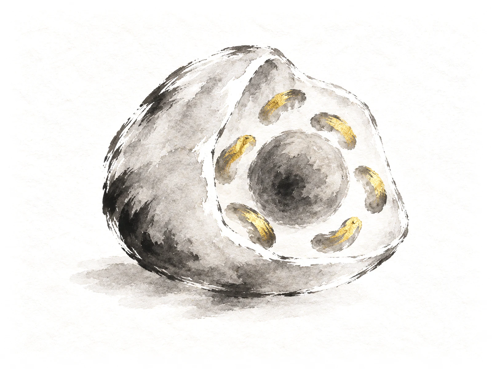
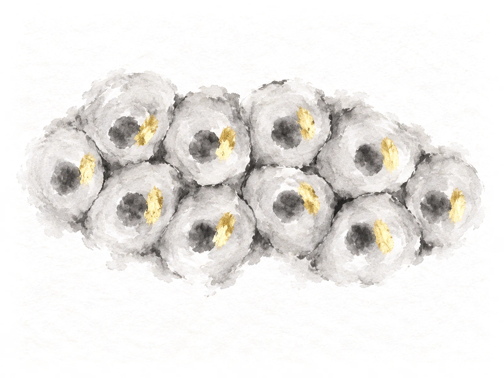

<title>Aging Cell Pictures</title>
<meta name="claude:viewport-fit-sides" content="cover">
<link rel="preconnect" href="https://fonts.googleapis.com">
<link rel="preconnect" href="https://fonts.gstatic.com" crossorigin>
<link rel="stylesheet" href="https://fonts.googleapis.com/css2?family=Ysabeau:wght@400;500&family=Instrument+Sans:wght@400;500&display=swap">
<style>
  /* Layout: the options down one column on the site's rice paper. Each is a slice of the real
     "Aging cells" topic (its words beside the sample paintings), with a working age slider like
     the site's, so the painting changes as you drag. One light world, like the site. */
  :root {
    --paper: #f6f3ec;
    --ink: #1c1a16;
    --grey: #5f5a50;
    --hair: #d9d2c2;
    --gold: #8a6a22;
    --title: "Ysabeau", "Iowan Old Style", "Palatino Linotype", Georgia, serif;
    --body: "Instrument Sans", system-ui, -apple-system, "Segoe UI", Roboto, sans-serif;
    color-scheme: light;
  }
  [hidden] { display: none !important; }
  body {
    background: var(--paper) url("img/paper.webp") center top / 900px auto repeat;
    color: var(--ink);
    font: 18px/1.55 var(--body);
  }
  .page {
    max-width: 1180px;
    margin: 0 auto;
    padding-left: max(16px, env(safe-area-inset-left, 0px));
    padding-right: max(16px, env(safe-area-inset-right, 0px));
    padding-block: 36px 80px;
    display: grid;
    gap: 64px;
  }
  h1, h2, h3 { font-family: var(--title); font-weight: 500; line-height: 1.12; text-wrap: balance; margin: 0; }
  h1 { font-size: clamp(2rem, 5.4vw, 3rem); }
  p { margin: 0; }
  .tag { font-size: 0.78rem; letter-spacing: 0.09em; text-transform: uppercase; color: var(--gold); }
  .intro { display: grid; gap: 12px; max-width: 46rem; }
  .intro p { color: var(--grey); }

  .option { display: grid; gap: 24px; border-top: 1px solid var(--hair); padding-top: 32px; }
  .option > header { display: grid; gap: 6px; }
  .option > header h2 { font-size: clamp(1.7rem, 4vw, 2.3rem); }
  .pick { font: 500 0.8rem var(--body); letter-spacing: 0.06em; text-transform: uppercase; color: var(--gold); }

  /* the slice of the section */
  .slice {
    display: grid;
    grid-template-columns: minmax(0, 0.9fr) minmax(0, 1.25fr);
    gap: clamp(24px, 4vw, 56px);
    align-items: center;
  }
  .words { display: grid; gap: 14px; align-content: start; }
  .words h3 { font-size: clamp(1.35rem, 2.3vw, 1.7rem); }
  .words > p { color: var(--grey); }
  .words ul { list-style: none; margin: 0; padding: 0; display: grid; gap: 8px; }
  .words li { display: flex; gap: 12px; }
  .words li::before { content: "\2014"; color: var(--grey); }
  figure { margin: 0; display: grid; gap: 14px; min-width: 0; justify-items: center; }
  .stage { position: relative; width: 100%; aspect-ratio: 4 / 3; max-width: 100%; }
  .stage img {
    position: absolute; inset: 0; width: 100%; height: 100%; object-fit: contain;
    mix-blend-mode: multiply; opacity: 0; transition: opacity 0.5s ease;
  }
  .stage img.on { opacity: 1; }
  .illus { position: absolute; top: 2%; right: 3%; font-size: 0.82rem; color: var(--grey); }
  figcaption { font-size: 1.02rem; line-height: 1.4; text-align: center; min-height: 2.8em; max-width: 30rem; }

  .age { display: flex; align-items: center; gap: 16px; width: min(100%, 30rem); }
  .age label { display: flex; align-items: baseline; gap: 8px; white-space: nowrap; font-size: 0.95rem; }
  .age output { font: 500 1.7rem var(--body); font-variant-numeric: tabular-nums; min-width: 2ch; }
  .age input { flex: 1; min-width: 0; accent-color: var(--ink); height: 32px; }
  .honest { font-size: 0.95rem; font-weight: 500; }

  .note { color: var(--grey); max-width: 46rem; }
  .verdict { display: grid; gap: 14px; border-top: 1px solid var(--hair); padding-top: 32px; max-width: 46rem; }
  .verdict h2 { font-size: clamp(1.4rem, 3vw, 1.8rem); }
  .verdict ul { margin: 0; padding-left: 1.2em; display: grid; gap: 8px; }
  .dropped { display: grid; grid-template-columns: repeat(2, minmax(0, 1fr)); gap: 20px; }
  .dropped img { display: block; width: 100%; height: auto; mix-blend-mode: multiply; }
  .dropped figcaption { font-size: 0.95rem; color: var(--grey); min-height: 0; text-align: left; }
  input:focus-visible { outline: 2px solid var(--ink); outline-offset: 4px; }

  @media (max-width: 760px) {
    .slice { grid-template-columns: minmax(0, 1fr); }
    .slice figure { order: -1; }
  }
  @media (prefers-reduced-motion: reduce) {
    .stage img { transition: none; }
  }
</style>

<main class="page">
  <header class="intro">
    <span class="tag">Homepage · Make sense of the science · Aging cells</span>
    <h1>A cell that ages with the slider</h1>
    <p id="lede">In place of the steam train: one brain cell, painted at three ages. Drag the age on each.</p>
  </header>
  <div id="options"></div>
  <section class="verdict" id="verdict"></section>
</main>

<template id="words">
  <div class="words">
    <h3>What happens to your cells as you age?</h3>
    <p>A closer look at how cells change over time and what researchers are learning about healthy aging.</p>
    <ul>
      <li>Many processes change with age</li>
      <li>Mitochondria are one part of the story</li>
      <li>No single ingredient explains it all</li>
    </ul>
  </div>
</template>

<script>
  const OPTIONS = [
    {
      id: "b",
      pick: true,
      title: "B. One brain cell, up close",
      images: ["img/close-young-a2.webp", "img/close-middle-a1-aligned.webp", "img/close-old-a1-aligned.webp"],
      alts: [
        "A brain cell painted close up in ink: strong branches, six gold power plants around its centre",
        "The same brain cell, middle-aged: thinner branches, three power plants still gold",
        "The same brain cell, old: pale, short branches, one power plant still gold",
      ],
      captions: [
        "Young: strong branches, and power plants burning bright.",
        "Middle age: the branches thin a little, and some power plants slow down.",
        "Older: thinner branches and less power. Still at work.",
      ],
      note: "Close enough to see the cell's gold power plants. As the age goes up, the branches thin and the gold goes out one by one. That ties straight to the words: “Mitochondria are one part of the story.”",
    },
    {
      id: "a",
      title: "A. One brain cell, whole",
      images: ["img/neuron-young-a1.webp", "img/neuron-middle-a1-aligned.webp", "img/neuron-old-b2-aligned.webp"],
      alts: [
        "A whole brain cell painted in ink, its branches spread like an oak's crown in winter, full of fine twigs",
        "The same brain cell, middle-aged: most fine twigs gone, the main branches still there",
        "The same brain cell, old: shorter, barer branches and a paler body",
      ],
      captions: [
        "Young: a brain cell full of branches, reaching out to others.",
        "Middle age: some fine branches thin out, and some power plants slow down.",
        "Older: fewer, shorter branches and less power. Still at work.",
      ],
      note: "The whole cell, like an oak in winter. As the age goes up, its fine branches thin out. The more delicate picture, but its gold is small, so the power plants are hard to see on a phone.",
    },
  ];
  const VERDICT =
    '<h2>Why a brain cell</h2>' +
    '<ul>' +
    '<li>Most brain cells last a whole life, so one cell can show aging without dying.</li>' +
    '<li>Studies find some of their branches thin out with age, in parts of the brain. Results vary, so the words say “some”.</li>' +
    '<li>It fits BiGH’s promise too: stay sharp.</li>' +
    '</ul>' +
    '<h2>Tried and dropped</h2>' +
    '<div class="dropped">' +
    '<figure><figcaption>A cut-open cell: reads like a stone.</figcaption></figure>' +
    '<figure><figcaption>A patch of cells: reads like frog eggs.</figcaption></figure>' +
    '</div>';

  // The site's thresholds: young to 42, middle from 43, old from 68; opens at 45.
  const stateFor = (age) => (age >= 68 ? 2 : age >= 43 ? 1 : 0);

  const root = document.getElementById("options");
  OPTIONS.forEach((o, i) => {
    const sec = document.createElement("section");
    sec.className = "option";
    sec.setAttribute("aria-labelledby", "opt-" + o.id);
    sec.innerHTML =
      '<header>' + (o.pick ? '<span class="pick">My pick</span>' : "") +
      '<h2 id="opt-' + o.id + '"></h2></header>' +
      '<div class="slice"></div><p class="note"></p>';
    sec.querySelector("h2").textContent = o.title;
    sec.querySelector(".note").textContent = o.note;
    const slice = sec.querySelector(".slice");
    slice.appendChild(document.getElementById("words").content.cloneNode(true));

    const fig = document.createElement("figure");
    const stage = document.createElement("div");
    stage.className = "stage";
    o.images.forEach((src, k) => {
      const img = document.createElement("img");
      img.src = src;
      img.alt = o.alts[k];
      img.width = 1600;
      img.height = 1200;
      stage.appendChild(img);
    });
    const tag = document.createElement("span");
    tag.className = "illus";
    tag.textContent = "Illustrations";
    stage.appendChild(tag);
    const cap = document.createElement("figcaption");
    const ageRow = document.createElement("div");
    ageRow.className = "age";
    const id = "age-" + o.id;
    ageRow.innerHTML =
      '<label for="' + id + '">Age <output for="' + id + '">45</output></label>' +
      '<input type="range" id="' + id + '" min="20" max="90" step="1" value="45">';
    const honest = document.createElement("p");
    honest.className = "honest";
    honest.textContent = "Illustration, not a measurement";
    fig.append(stage, cap, ageRow, honest);
    slice.appendChild(fig);

    const input = ageRow.querySelector("input");
    const out = ageRow.querySelector("output");
    const imgs = stage.querySelectorAll("img");
    const show = () => {
      const age = Number(input.value);
      const s = stateFor(age);
      out.textContent = age;
      imgs.forEach((im, k) => im.classList.toggle("on", k === s));
      cap.textContent = o.captions[s];
    };
    input.addEventListener("input", show);
    show();
    root.appendChild(sec);
  });
  document.getElementById("verdict").innerHTML = VERDICT;
</script>
